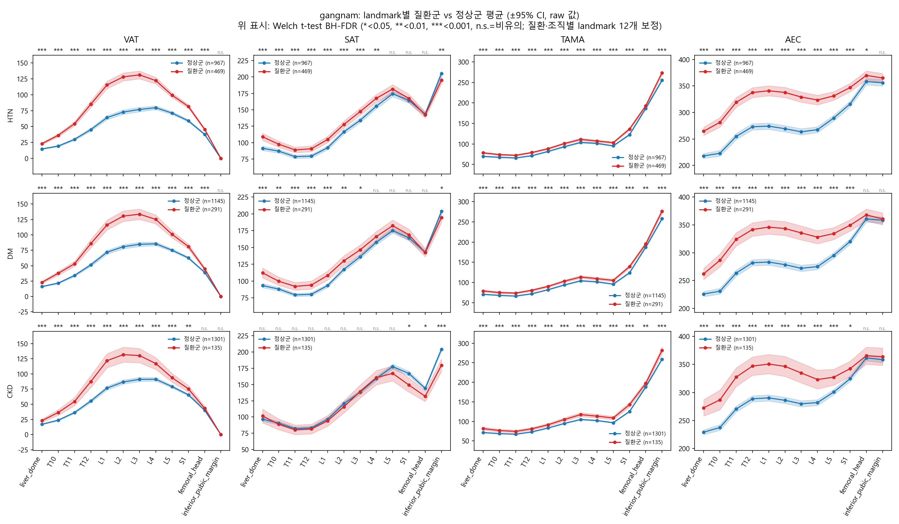
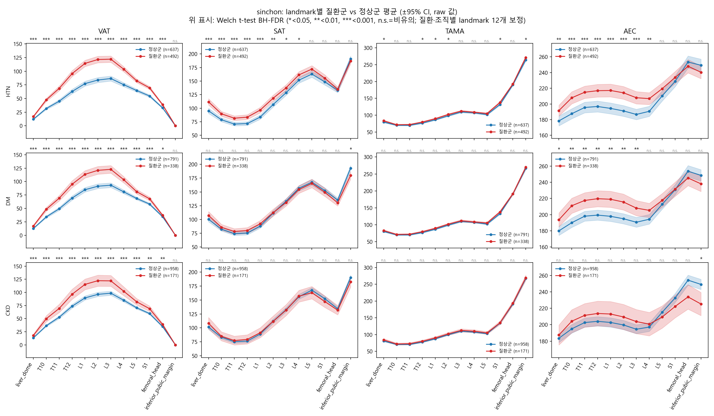

복부 CT의 AEC·체성분 landmark 지표를 이용한 고혈압·당뇨·만성콩팥병 분류
연구 진행 보고서 · JangHoon Chun · 모델 실험 앱: localhost:8501 (streamlit run code/app.py)
복부 CT에서 측정한 내장지방·피하지방·근육·노출선량(AEC) 값을 성별·나이·키·체중에 더해도, 고혈압·당뇨·만성콩팥병을 구분하는 정확도(AUC)는 유의하게 좋아지지 않았다. 내장지방은 병이 있는 군에서 확실히 많았지만(연관성), 그것이 진단 정확도 향상으로는 이어지지 않았다. 환자 수가 적어 "효과 없음"까지 단정하기는 어렵다.
초록
배경·목적 복부 CT의 내장지방(VAT)·피하지방(SAT)·근육(TAMA) 면적과 자동노출조절(AEC) 값이 성별·나이·키·체중 외에 고혈압(HTN)·당뇨(DM)·만성콩팥병(CKD) 분류에 얼마나 더 도움이 되는지 확인한다.
방법 두 병원의 단면 코호트(Gangnam 1,436명, Sinchon 1,129명)에서 정상군(세 질환 없음)과 질환 단독군을 비교했다. 후보 feature 333개(landmark 단면 값, 같은 위치 안의 지표 비, 위치 간 비)에서 Gangnam valid AUC만으로 로지스틱 forward selection을 했다. Gangnam은 train/valid/test = 70/10/20으로 나눴고, internal test와 Sinchon 외부검증은 평가에만 썼다. baseline과의 ΔAUC는 paired bootstrap 95% CI와 DeLong 검정(질환 3개 Holm 보정)으로 봤다.
결과 세 질환 모두 baseline 대비 AUC가 유의하게 오르지 않았다. internal test ΔAUC는 −0.046~+0.030이고 95% CI가 모두 0을 포함했다. external ΔAUC는 세 질환 모두 음수(−0.044~−0.008)였다. CI 폭이 HTN ±0.05, CKD ±0.1 정도여서 +0.03~0.05 수준의 향상은 배제하지 못한다. 전체 환자를 미보정으로 비교한 분석(3.3절)에서는 정상군과 질환군의 VAT 평균 차이가 가장 컸다.
결론 이 표본과 설계에서는 landmark 지표가 기본 정보 이상으로 분류 성능을 높인다는 근거를 얻지 못했다. 다만 양성 수가 적어 "효과가 없다"고 결론짓기는 어렵다. 특히 CKD 단독군(22명, 14명)은 해석이 어렵다.
1. 서론
- 이미 찍은 CT에서 추가 비용이나 방사선 없이 만성질환 위험군을 가려낼 수 있는지 알아보려는 연구다(opportunistic screening). 다만 대상이 임상 적응증으로 CT를 찍은 환자라 일반 선별 인구와는 다르고, 현재 유병 상태를 분류하는 설계다.
- VAT가 SAT보다 HTN·DM과 더 강하게 연관된다는 보고는 많다(부록). 하지만 landmark별 지표를 기본 정보에 더했을 때 예측 성능이 좋아지는지를 본 근거는 많지 않고, AEC를 질환 지표로 다룬 연구는 찾지 못했다.
- 연구 질문: 기본 정보에 landmark별 체성분·AEC 지표를 더하면 HTN·DM·CKD 분류 AUC가 internal test와 external 모두에서 올라가는가. VAT 관련 지표가 가장 기여할 것으로 예상했다.
- 이 연구는 사전 등록 없이 진행한 탐색적 연구다. 평가 방식은 hold-out에서 5-fold CV를 거쳐 7/1/2 hold-out으로 정리했고, 그 과정에서 이전 분석의 test·external 결과를 참고했다. 현재의 feature 정의(Tier1·Tier2), 선택 규칙(0.005 컷오프), 성공 기준도 이전 결과를 본 뒤에 정했으므로 external은 완전한 blind 검증이 아니다.
2. 방법
2.1 코호트와 품질 관리
- Gangnam(내부 학습)과 Sinchon(외부검증)의 단면 코호트. 환자 1명당 CT 1건.
- 포함: 체성분 곡선(VAT·SAT·TAMA), 임상 변수(성별·나이·키·체중), 질환 라벨(HTN·DM·CKD)이 모두 있는 환자.
- 품질 관리(QC): 위에서 아래로 T10 → L1~L5 → S1 → 대퇴골두 → 치골 순으로 slice 번호가 커져야 하는데 그렇지 않거나, 간 상부가 치골보다 아래에 있는 환자는 landmark를 잘못 찾은 것으로 보고 제외했다(Gangnam 7명, Sinchon 16명). 최종 Gangnam 1,436명, Sinchon 1,129명.
2.2 환자 그룹핑
- 정상군: HTN·DM·CKD가 모두 없는 환자. 진단 기록이 없다는 뜻이라 미진단 환자가 섞여 있을 수 있다.
- 질환 단독: 해당 질환이 있고 나머지 두 질환은 없는 환자(예: HTN 단독). 질환 간 효과가 섞이지 않도록 복합 질환자와 다른 질환 단독자는 해당 비교에서 제외.
| 비교 대상 | Gangnam 정상 / 질환 (명) | Sinchon 정상 / 질환 (명) |
|---|---|---|
| 정상 vs HTN 단독 | 837 / 237 | 517 / 194 |
| 정상 vs DM 단독 | 837 / 96 | 517 / 97 |
| 정상 vs CKD 단독 | 837 / 22 | 517 / 14 |
표 1. 비교 대상별 인원. 전체 코호트의 질환별 유병률(복합 포함)은 Gangnam HTN 469 · DM 291 · CKD 135, Sinchon HTN 492 · DM 338 · CKD 171. 여성 비율은 Gangnam 약 61%, Sinchon 약 49%로 case-mix가 다르다.
2.3 데이터 분할과 평가 프로토콜
Gangnam을 train 70% / valid 10% / internal test 20%로 나눴다. valid는 feature 선택에만, internal test는 선택에 쓰지 않은 평가에만 썼다. Sinchon 전원은 train+valid로 다시 학습한 고정 모델을 한 번만 적용하는 external 검증에 썼다.
- 환자 단위로 질환 비율을 유지(stratified)해 나눴고 seed는 111로 고정했다. PatientID 중복이 없음을 확인했다.
- feature 선택에는 valid AUC만 썼고, 선택이 끝난 뒤 internal test·external 성능을 보고 feature나 모델을 바꾸지는 않았다. 다만 이 절차 자체가 이전 분석 결과를 본 뒤에 정해졌다는 점은 서론에 적은 대로다. 이전에 test·external p로 feature를 골랐을 때 개선이 유의하게 보이다가 valid 기반으로 바꾸자 사라졌다.
| 대상 | train (양성) | valid (양성) | internal test (양성) |
|---|---|---|---|
| HTN 단독 | 751 (166) | 108 (24) | 215 (47) |
| DM 단독 | 652 (67) | 94 (10) | 187 (19) |
| CKD 단독 | 601 (16) | 86 (2) | 172 (4) |
표 2. split별 인원(양성). CKD는 valid 양성 2명, test 양성 4명.
2.4 Feature 정의
기본 정보 4개(성별, 나이, 키, 체중)는 항상 모델에 들어가고, 아래 세 종류가 추가 후보다. BMI는 키·체중과 겹쳐 입력에서 뺐다.
| 종류 | 개수 | 무엇인가 | 계산 | 예 |
|---|---|---|---|---|
| ① Landmark 단면 값 | 47 | 12개 landmark의 slice 한 장에서 읽은 VAT·SAT·TAMA 면적(cm²)과 AEC 값 | VAT 11곳 + SAT 12곳 + TAMA 12곳 + AEC 12곳 (VAT는 치골 하연에 값이 없어 제외) | VAT@L3 |
| ② Tier1 같은 slice 안의 비율 | 33 | 한 높이에서 내장지방, 피하지방, 근육이 서로 어떤 비중인지 | log[(VAT+1)/(SAT+1)], log[(VAT+1)/(TAMA+1)], log[(TAMA+1)/(VAT+SAT+1)] × 11곳 | TAMA/(VAT+SAT)@L2 |
| ③ Tier2 위치 간 비율 | 253 | 같은 지표가 두 위치에서 얼마나 다른지(예: 상복부 대 하복부 분포) | log[(a+1)/(b+1)], 위치 쌍 C(12,2) = 66개 × (SAT·TAMA·AEC) + VAT 55개(치골 하연 제외) | VAT@T10/T12 |
| 합계 | 333 | 47 + 33 + 253 | ||
표 2-1. 후보 feature. 비율은 값이 0일 때를 막기 위해 모두 +1 후 log를 취했다. 12개 landmark: liver dome, T10, T11, T12, L1, L2, L3, L4, L5, S1, femoral head, inferior pubic margin. "A@T11/L5"는 같은 지표 A를 T11과 L5에서 읽어 비율을 구했다는 뜻이다. 체격이 크면 모든 값이 같이 커지므로, 비율은 그 영향을 줄이기 위한 것이다.
2.5 Feature 선택과 모델
333개 후보 중 어떤 feature를 모델에 넣을지는 아래 방식으로 정했다. 기준은 오직 Gangnam valid 데이터의 AUC다. internal test, external(Sinchon), p값, OR은 선택에 쓰지 않았다.
- 성별·나이·키·체중(baseline)만 넣은 로지스틱 회귀를 train으로 학습하고, valid AUC를 기준값으로 잡는다.
- 333개 후보를 하나씩 baseline에 더해서 valid AUC를 각각 계산한다.
- 가장 AUC가 높은 후보가 기준값보다 0.005 이상 올렸으면 추가하고, 그 AUC를 새 기준값으로 삼는다. 0.005 미만이면 선택을 끝낸다.
- 개수 제한 없이 2~3을 반복한다.
결과적으로 HTN 6개, DM 4개, CKD 3개가 선택됐다. 개수 상한을 두지 않고 다시 선택해도 같은 feature가 나왔다.
세부 조건은 다음과 같다. 평가 모델은 로지스틱 회귀(C=1)이고 train 중앙값으로 결측을 채운 뒤 train 기준으로 표준화한다. 질환마다 같은 split(seed 111)에서 따로 선택했다. 선택이 끝난 feature(표 3)는 그대로 고정해서 internal test와 external에 한 번만 적용했다.
| 대상 | 선택된 추가 feature |
|---|---|
| HTN | VAT@S1, VAT@T11/L5, AEC@L5/S1, AEC@L3/inferior_pubic_margin, TAMA/(VAT+SAT)@L2, SAT@femoral_head/inferior_pubic_margin |
| DM | SAT@T10/T11, TAMA@L4/femoral_head, AEC@T12/L1, VAT@T10/T12 |
| CKD | SAT@T11/L2, SAT@S1/femoral_head, SAT@T12/L3 |
표 3. valid AUC로 선택된 feature.
2.6 통계 분석
- AUC 차이(Δ)의 95% CI는 같은 환자를 쓰는 paired bootstrap(500회)으로, p는 DeLong 검정으로 구했다. AUC 외에 Brier score와 민감도·특이도·PPV·NPV를 함께 보고한다.
- 다중비교는 HTN·DM·CKD 3개를 한 계열로 묶어 코호트별로 Holm 보정을 했다. 성공 기준은 internal과 external 모두 Δ>0이고 Holm p<0.05인 것이다. 후보 333개에서 고르는 다중성은 valid로만 선택하는 절차(2.3)로 다뤘다.
- Odds ratio(+1SD당)는 각 코호트의 정상+질환 단독 전체에 로지스틱 회귀로 구했다.
3. 결과
3.1 baseline 대비 분류 성능
| 대상 | internal test (Gangnam) | external (Sinchon) | Holm p (3개 질환) | |||||
|---|---|---|---|---|---|---|---|---|
| AUC base → 선택 | Δ [95% CI] | p | AUC base → 선택 | Δ [95% CI] | p | int | ext | |
| HTN | 0.725 → 0.733 | +0.008 [−0.039, +0.057] | 0.740 | 0.700 → 0.674 | −0.026 [−0.050, +0.003] | 0.061 | 1.000 | 0.183 |
| DM | 0.602 → 0.633 | +0.030 [−0.024, +0.104] | 0.364 | 0.614 → 0.606 | −0.008 [−0.042, +0.026] | 0.648 | 1.000 | 0.752 |
| CKD | 0.930 → 0.884 | −0.046 [−0.146, +0.076] | 0.367 | 0.641 → 0.597 | −0.044 [−0.138, +0.054] | 0.376 | 1.000 | 0.752 |
표 4. 로지스틱 회귀, 정상 vs 질환 단독. Δ = 선택 모델 − baseline. p는 DeLong. Holm은 HTN·DM·CKD 3개를 한 계열로 코호트별 적용했다.
- 쉽게 말해, 같은 병원 환자(internal)에서는 HTN과 DM의 AUC가 조금 올랐지만 우연으로 설명될 수 있는 범위다(95% CI가 0을 포함). 다른 병원 환자(external)에서는 세 질환 모두 오히려 낮아졌다.
- CI 폭이 ±0.05(HTN)~±0.1(CKD)라서 +0.03~0.05 정도의 실제 향상도 이 표본으로는 배제하지 못한다. "향상이 없다"기보다 "이 표본으로는 판단하기 어렵다"가 맞다.
| 질환 | 코호트 | 모델 | AUC | Brier | 민감도 | 특이도 | PPV | NPV |
|---|---|---|---|---|---|---|---|---|
| HTN | internal test | baseline | 0.725 | 0.153 | 0.45 | 0.77 | 0.36 | 0.83 |
| +선택 feature | 0.733 | 0.159 | 0.32 | 0.86 | 0.39 | 0.82 | ||
| external | baseline | 0.700 | 0.180 | 0.54 | 0.74 | 0.44 | 0.81 | |
| +선택 feature | 0.674 | 0.194 | 0.42 | 0.78 | 0.42 | 0.78 | ||
| DM | internal test | baseline | 0.602 | 0.092 | 0.37 | 0.71 | 0.12 | 0.91 |
| +선택 feature | 0.633 | 0.092 | 0.21 | 0.79 | 0.10 | 0.90 | ||
| external | baseline | 0.614 | 0.134 | 0.37 | 0.76 | 0.23 | 0.87 | |
| +선택 feature | 0.606 | 0.133 | 0.38 | 0.77 | 0.24 | 0.87 | ||
| CKD | internal test | baseline | 0.930 | 0.021 | 1.00 | 0.82 | 0.12 | 1.00 |
| +선택 feature | 0.884 | 0.022 | 0.25 | 0.96 | 0.14 | 0.98 | ||
| external | baseline | 0.641 | 0.026 | 0.50 | 0.66 | 0.04 | 0.98 | |
| +선택 feature | 0.597 | 0.027 | 0.07 | 0.88 | 0.02 | 0.97 |
표 5. 평가 지표. 임계값은 해당 모델의 Gangnam valid에서 Youden index(민감도+특이도 최대)로 정해 internal test와 external에 그대로 적용했다. 민감도·특이도·PPV·NPV는 임계값에 따라 크게 달라지고, CKD internal test는 양성 4명이라 의미를 두기 어렵다.
3.2 선택된 feature의 odds ratio
| 질환 | 선택된 feature | Gangnam OR (95% CI) | p | Sinchon OR (95% CI) | p | 방향 일치 |
|---|---|---|---|---|---|---|
| HTN | VAT@S1 | 1.42 (1.08–1.87) | 0.011 | 1.10 (0.81–1.51) | 0.527 | 예 |
| VAT@T11/L5 | 1.40 (1.14–1.70) | 0.001 | 1.03 (0.83–1.28) | 0.794 | 예 | |
| AEC@L5/S1 | 1.31 (1.06–1.61) | 0.013 | 0.89 (0.73–1.09) | 0.261 | 아니오 | |
| AEC@L3/inferior_pubic_margin | 0.83 (0.62–1.11) | 0.219 | 1.26 (1.00–1.60) | 0.051 | 아니오 | |
| TAMA/(VAT+SAT)@L2 | 0.66 (0.48–0.92) | 0.014 | 1.00 (0.68–1.47) | 0.992 | 아니오 | |
| SAT@femoral_head/inferior_pubic_margin | 0.82 (0.66–1.00) | 0.053 | 0.95 (0.75–1.22) | 0.704 | 예 | |
| DM | SAT@T10/T11 | 0.80 (0.62–1.03) | 0.085 | 1.02 (0.81–1.29) | 0.842 | 아니오 |
| TAMA@L4/femoral_head | 1.47 (1.14–1.88) | 0.002 | 0.98 (0.75–1.27) | 0.853 | 아니오 | |
| AEC@T12/L1 | 1.01 (0.80–1.28) | 0.927 | 1.11 (0.88–1.41) | 0.371 | 예 | |
| VAT@T10/T12 | 1.19 (0.94–1.50) | 0.154 | 1.17 (0.92–1.49) | 0.202 | 예 | |
| CKD | SAT@T11/L2 | 1.93 (1.08–3.47) | 0.027 | 0.83 (0.36–1.91) | 0.665 | 아니오 |
| SAT@S1/femoral_head | 1.65 (0.98–2.79) | 0.060 | 1.00 (0.56–1.79) | 0.989 | 예 | |
| SAT@T12/L3 | 0.66 (0.33–1.34) | 0.249 | 1.63 (0.60–4.46) | 0.339 | 아니오 |
표 6. 선택된 feature의 odds ratio(+1SD당). 기본 정보 4개와 선택 feature를 모두 넣은 로지스틱 회귀를 각 코호트의 정상+질환 단독 전체에 적합했다. Gangnam OR은 선택에 쓴 데이터에서 구한 값이라 낙관적일 수 있다.
- 나이는 HTN(OR 1.83 / 2.12)과 DM(1.66 / 1.76)에서 두 코호트 모두 유의하고 방향도 같다.
- 선택된 landmark feature는 Gangnam에서 유의해도 Sinchon에서는 약해지거나 방향이 바뀌는 경우가 많다. CKD는 양성이 22명, 14명뿐이라 CI가 매우 넓다.
3.3 질환군과 정상군의 landmark 평균 차이
이 절은 복합 질환자를 포함한 전체 환자를 대상으로 해서 정상 vs 단독 설계와 대상이 다르다.
표 7. 나이·성별·BMI 보정 OR (+1SD, * = FDR<0.05)
| Disease | Cohort | VAT@L1 | VAT@L2 | VAT@L3 | SAT@L3 | TAMA@L3 | AEC@L3 |
|---|---|---|---|---|---|---|---|
| HTN | Gangnam | 1.69* | 1.74* | 1.77* | 1.46* | 0.89 | 1.46* |
| Sinchon | 1.39* | 1.35* | 1.29* | 0.93 | 0.95 | 1.05 | |
| DM | Gangnam | 1.39* | 1.49* | 1.48* | 0.99 | 1.11 | 1.34* |
| Sinchon | 1.09 | 1.09 | 1.12 | 0.69* | 0.80 | 1.02 | |
| CKD | Gangnam | 1.18 | 1.09 | 0.98 | 1.10 | 1.27 | 1.19 |
| Sinchon | 1.32 | 1.30 | 1.23 | 0.88 | 0.86 | 0.98 |


4. 고찰
- HTN의 VAT는 3.3절에서 보정 후에도 두 코호트에서 일관된 연관을 보였지만, valid로 선택한 모델에서는 성별·나이·키·체중 위에 분류력을 더하지 못했고 선택된 VAT feature의 OR도 Sinchon에서 약해졌다. 체중·나이와 VAT가 정보를 많이 공유할 가능성이 있으나 공선성은 확인하지 않았다.
- 후보가 333개인데 valid 양성은 2~60명이라 선택이 valid의 잡음에 흔들리기 쉽다. internal Δ는 모두 CI가 0을 포함하므로 "실제 Δ가 0에 가깝다"와 "선택 과정의 과적합"을 현재 데이터로는 구분하지 못한다.
- 병원, 스캐너, 유병률, 성별 구성이 달라서 external 하락의 원인이 일반화 실패인지 case-mix·장비 차이인지 알 수 없다. 특히 AEC는 장비와 얽혀 있다. VAT가 SAT보다 연관이 강하다는 방향은 선행연구와 같다(부록).
5. 한계
결과를 읽을 때 가장 중요한 점은 질환 환자가 적다는 것이다.
- 양성 수가 적다. valid·test 양성이 DM 10명·19명, CKD 2명·4명이라 선택과 평가의 분산이 크고, 결과는 단일 split(seed 111)의 값이다. 후보 333개를 valid 한 번으로 탐색했기 때문에 valid AUC는 낙관적이다.
- 단면 자료라 발병 이전의 위험 예측이 아니라 현재 유병 상태를 분류한다. 정상군에는 미진단 환자가 섞일 수 있고, CKD 단독군은 비전형적인 소집단일 수 있다.
- 평가 방식과 feature 정의·선택 규칙을 이전 결과를 본 뒤에 정했으므로 external은 완전한 blind가 아니다. 병원·장비·촬영 조건은 보정하지 않았다.
- 라벨 출처와 CKD 판정 기준, CT 프로토콜, landmark 검출 방식, AEC 단위, 결측 비율, IRB는 아직 정리하지 못했고 TRIPOD+AI 항목 대조도 하지 않았다.
부록. 선행연구와의 비교
| Study | 핵심 결과 | 본 연구와의 관계 |
|---|---|---|
| Framingham (n=3,001) | VAT가 SAT보다 HTN·DM·MetS와 강한 연관, 여성에서 더 강함 | VAT > SAT: 일치. '여성에서 더 강함'은 HTN Gangnam(남 1.93 > 여 1.40)과 달라 불일치 |
| Jackson Heart (n=2,477) | VAT 1SD당 OR 여성 HTN 1.62, DM 1.82 | 보정 OR HTN 1.3~1.8: 크기 유사 |
| Sci Rep 2026 한국 (n=14,105) | VAT↑ 시 CKD 위험↑, 여성 SAT는 역상관 | CKD VAT 방향 일치, 보정 후 비유의 |
| JCSM 2026 메타분석 (CKD) | CKD에서 당뇨는 근감소 위험↑, 높은 BMI는 보호 | TAMA는 매우 약함 (일부 구간 비율에서만 소수 위치): 간접 비교 |
| AEC | 질환 지표로 다룬 연구 못 찾음 | 탐색적, 체격·장비 교란 주의 |